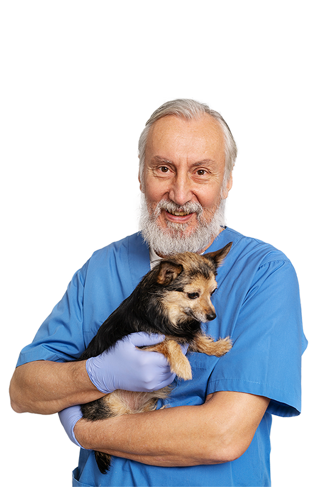
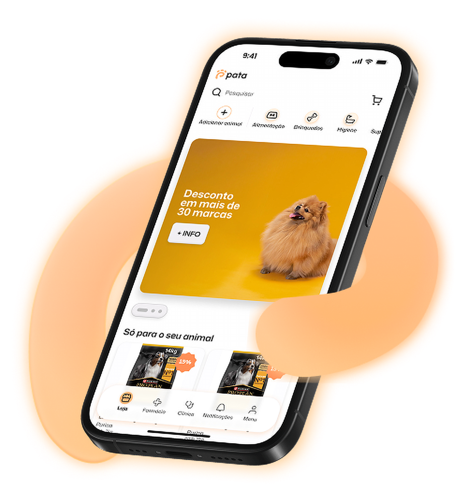
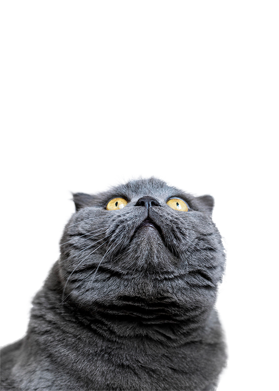
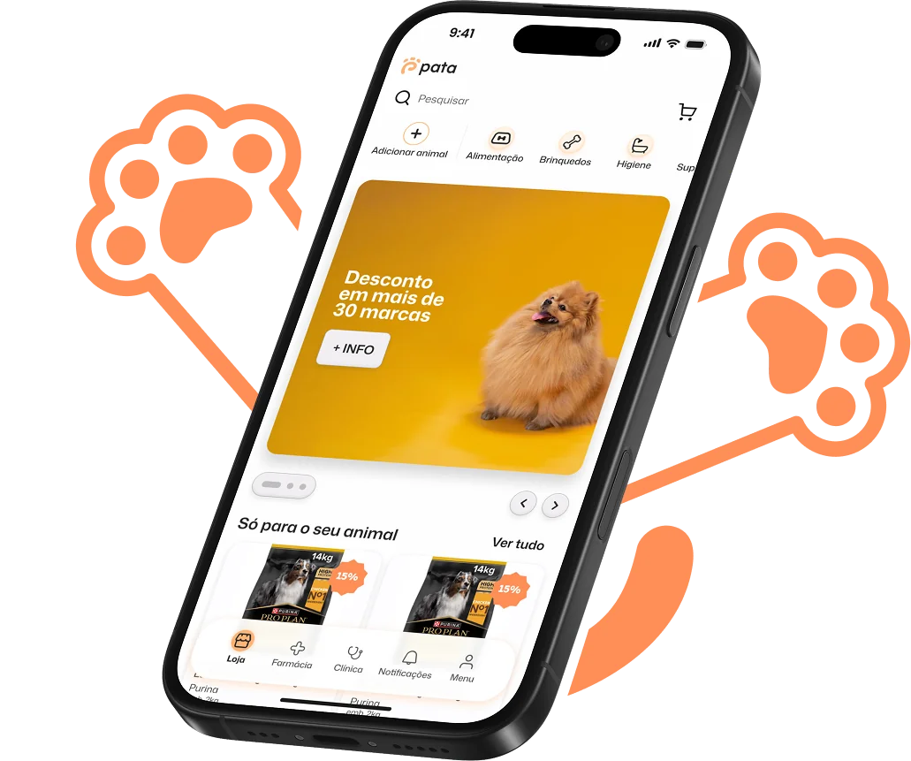
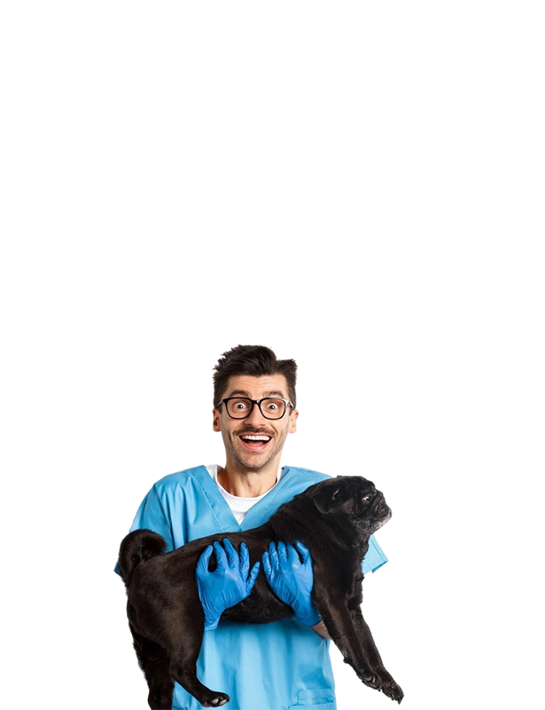
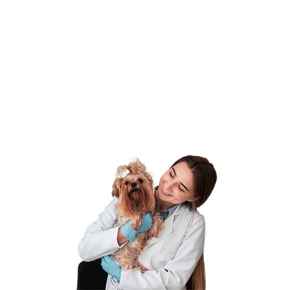
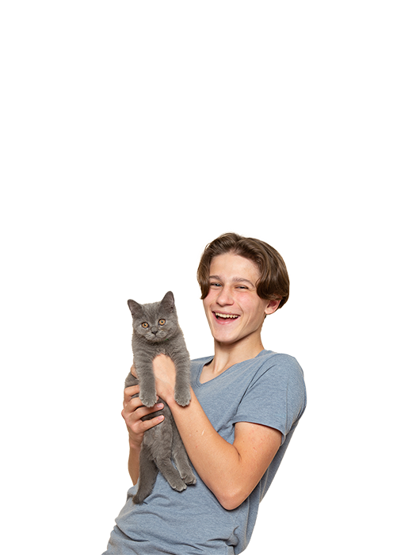
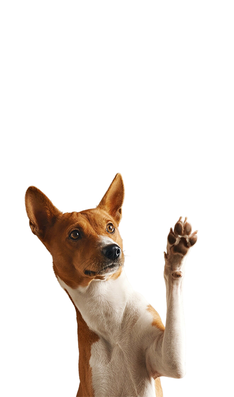
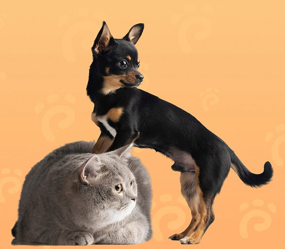
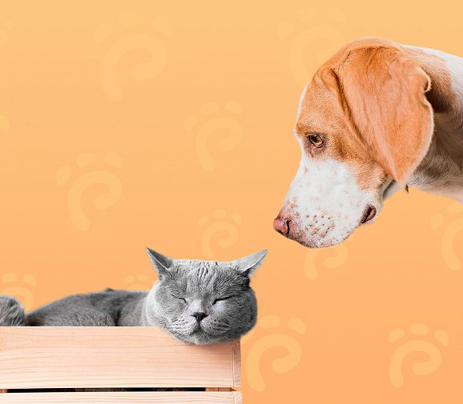

São três da manhã.
O seu patudo não está bem.
E agora?



Neste momento, uma urgência veterinária noturna custa:
Preço urgência noturna:
VetBizz Consulting / Veterinária Atual, 2024Com PATA
Sem sair do sofá.
Sem acordar a família.
Sem filas de espera.
Veterinário licenciado em videochamada.
Em 60 segundos.
Porquê tão mais barato?
Sem instalações físicas. Sem rececionistas. Sem salas de espera. Só pagamos veterinários — e eles recebem mais do que em clínica.
Imagine isto:
São 3h da manhã. O Max vomitou duas vezes. Abre a app PATA. Em 47 segundos, está em videochamada com a Dra. Ana. Ela vê o Max, faz perguntas, acalma-o: "É indigestão. Vou receitar um protetor gástrico. Amanhã estará bem." A receita chega ao email em segundos. A app mostra a farmácia mais próxima que abre às 9h. De manhã, avias em 2 minutos.
Volta a dormir. O Max também.
Custo total:
€187
da consulta.

2 milhões de lares portugueses
amam um animal
Mas amar não paga consultas. E quando a emergência acontece às 3h da manhã, o amor não responde ao telefone.
Estes números não são estatísticas.
São noites mal dormidas. São decisões impossíveis.
São histórias que acontecem todos os dias.
€70,90
Custo médio de urgência veterinária noturna
VetBizz, 2024Não estamos a inventar isto.
Falámos com quem vive este problema todos os dias.
500+
Tutores portugueses
inquiridos
87%
Usariam videoconsulta
veterinária
92%
Já adiaram consulta
por causa do custo
Histórias que acontecem todos os dias
Eram duas da manhã quando a Luna começou a vomitar. Não parava. Liguei para as urgências — €70,90 só para entrar. Mais a gasolina, mais o stress de meter a cadela no carro com as crianças a dormir. Chegámos esgotados, esperámos hora e meia, e o diagnóstico? "Indigestão. Vai passar." Custou-me €150 no total. Se pudesse ter feito uma videochamada com um veterinário naquele momento... tudo teria sido diferente.
Vivo no Alentejo. O veterinário mais próximo fica a 35 quilómetros. Para uma consulta de 15 minutos, perco meio dia: viagem, espera, consulta, regresso. O meu rafeiro fica stressado na viagem. Eu perco um turno de trabalho. E muitas vezes é para ouvir "está tudo bem, não era nada". Sabe quantas consultas já adiei por isto? Quantas vezes disse "vamos esperar para ver"? Demasiadas. Isso assusta-me.
O pior não é o dinheiro. O pior é a angústia de procurar no Google às quatro da manhã. "Gato a respirar rápido" — um site diz que é normal, outro diz que pode ser fatal. Entro em pânico total. E não tenho ninguém a quem recorrer até ao dia seguinte. Pagaria — e pagaria bem — por ter acesso a um veterinário de verdade, 24/7, que me pudesse dizer: "Calma, isto é normal" ou "Sim, deve ir já às urgências". Essa tranquilidade não tem preço.
Faça as contas
Sem PATA
€180+
Preço urgência noturna:
VetBizz Consulting / Veterinária Atual, 2024
Com PATA Premium Anual
€95,88
€7,99/mês × 12 meses
(12 consultas incluídas)
Poupança anual mínima:
€84+
* Plano anual com pagamento único. Também disponível: trimestral (€23,97) ou mensal (€7,99/mês por 3 meses, depois €9,99/mês).
Compare as suas opções
Cada solução tem o seu lugar. Veja qual faz sentido para si.
Critérios
PATA
CLÍNICA
Disponibilidade
24/7/365
Horário comercial
24/7
Tempo de resposta
< 60 segundos
Dias (agendamento)
Imediato
Custo por consulta
€9.99
€45 - €70
Grátis
Orientação profissional
✓Veterinário licenciado
✓ Veterinário licenciado
✕ Não validada
Exame físico
— Encaminha se necessário
✓ Completo
✕ Impossível
Receita + Medicação
✓ Digital + Farmácia próxima
✓ Presencial
✕ Não
Stress do animal
Zero (em casa)
Elevado (viagem)
Zero
Ideal para
Triagem, dúvidas urgentes, acompanhamento, referenciação personalizada.
Exames, cirurgias, tratamentos presenciais
Informação geral (com cautela)
Só a PATA faz isto
Se não precisar, não perde.
Passou 6 meses sem realizar consultas?
Significa que o seu patudo está saudável.
Nós celebramos isso. Por isso convertemos
€20 em crédito
para a loja PATA.
Porque acreditamos que uma subscrição deve recompensar quem fica, não castigar quem não usa.
Ginásios, telecoms, seguros:
"Não usou?
Azar.
Paga na mesma."
PATA:
"Não usou?
O seu animal está bem.
Aqui tem €20."
Solução
E se existisse uma forma diferente?
A PATA não é apenas uma app. É a tranquilidade de saber que, aconteça o que acontecer, tem ajuda imediata. Sempre.
Clínica PATA
Urgências 24/7
+Consultas
PATA AI
Assistente que ajuda a descrever sintomas antes da consulta. Mais eficiência. Menos ansiedade.
Videoconsultas 24/7
Acompanhamento regular, check-ups, segunda opinião. Marque quando quiser, de onde estiver.
Urgências
O seu patudo não está bem? Videochamada com veterinário licenciado em menos de 60 segundos. Às três da manhã. Ao domingo. No feriado. Sempre.
Receita Digital — Válida em Qualquer Farmácia
Após a consulta, o veterinário emite receita eletrónica válida diretamente para o seu email. A app indica a farmácia veterinária mais próxima (aberta ou com horário). Avia em minutos, sem repetir a história.

Loja PATA — Produtos Veterinários em Casa
Ração premium. Suplementação recomendada por veterinários. Desparasitantes. Produtos de higiene e bem-estar. Entrega ao domicílio em 24-48h. Tudo sem receita médica, tudo num só lugar.
Os primeiros 500
Não são clientes. São co-criadores.
Uma única urgência veterinária noturna
€70,90
Com PATA, esse valor paga
7 meses
meses de subscriçãoPrimeiros 3 meses
€7,99
/mêsDepois:
€9,99
/mêsMesmo que o preço aumente para €14,99 daqui a 2 anos, fica a €9,99. Vitalício.
Como funciona o acesso às consultas:
Consultas
desbloqueadas
imediatamente
MELHOR VALOR
Paga adiantado
12
€95,88/ano = €7,99/mês para sempre
3ª mensalidade
Desbloqueia
1ª
consulta

1 consulta/mês incluída
Urgência ou agendada, decide quando usar

Preço bloqueado vitalício
Nunca mais paga aumento
Acesso prioritário
A sua opinião molda o produto

Badge "Founder Member"
Identificação exclusiva
Não é escassez artificial. Queremos construir a PATA consigo, não apenas para si. O seu feedback será essencial.
Se esperar:
Perde o preço de fundador (€7,99 → €14,99 preço normal).
Perde as 12 consultas desbloqueadas de imediato.
Perde a garantia vitalícia de preço.
E na próxima emergência às 3h da manhã? Continua a pagar €70,90.
Perguntas frequentes sobre consultas veterinárias online
Não. A PATA complementa os cuidados veterinários tradicionais. É ideal para situações não urgentes, dúvidas sobre comportamento, alimentação, ou sintomas iniciais. Em casos graves ou emergências reais, recomendamos sempre uma consulta presencial.
Sim. Todos os veterinários da PATA são licenciados pela Ordem dos Médicos Veterinários de Portugal e têm experiência comprovada em medicina veterinária. Trabalhamos apenas com profissionais qualificados e certificados.
Atualmente atendemos cães e gatos. Estamos a planear expandir para outros animais domésticos no futuro. A nossa plataforma foi desenvolvida especificamente para as necessidades mais comuns destes animais de companhia.
Se necessário, o veterinário pode emitir uma receita digital válida, que será enviada diretamente para o seu email. Esta receita pode ser usada em qualquer farmácia veterinária ou pet shop para adquirir medicamentos prescritos.
A PATA ajuda a avaliar a urgência da situação. Em caso de emergência real (trauma grave, sangramento intenso, dificuldade respiratória severa), o veterinário irá recomendar que leve o seu animal imediatamente a uma clínica de urgência.
Se o veterinário determinar que é necessário um exame físico ou exames complementares (análises, raio-X), irá recomendar uma consulta presencial e fornecer orientações sobre os próximos passos. A sua consulta PATA não é desperdiçada.
Sim, pode cancelar a qualquer momento sem penalizações. O cancelamento tem efeito no final do período de faturação atual, e continuará com acesso até essa data. Não fazemos cobranças surpresa.
Imediatamente após completar o seu registo. Receberá acesso à plataforma em menos de 2 minutos e poderá agendar ou iniciar uma consulta de imediato, 24 horas por dia, 7 dias por semana.
Sim. A PATA está em conformidade com o RGPD. Todos os dados são encriptados, armazenados de forma segura, e nunca partilhados com terceiros sem o seu consentimento. As consultas são confidenciais e protegidas.


O que acontece depois:
- Recebe email de confirmação (verifique spam)
- Enviamos atualizações mensais sobre o desenvolvimento
- Será notificado 48h antes do lançamento
- Terá 24h de vantagem para ativar os benefícios
Problemas com o formulário?
Problemas com o formulário? Envie email para ola@pata.care com o assunto "Lista de Espera" e incluiremos manualmente.
Ele confia em si. Agora pode confiar em nós.
Acesso imediato a veterinários. 24/7. Sem stress. Sem custos proibitivos. Sem deslocações às três da manhã. Isto não é ficção. Está iminente. E pode ser dos primeiros.
Zero
Risco
Zero
custo agora
100%
de benefícios depois
P.S. Lembra-se daquele momento às três da manhã quando o seu patudo não estava bem e não sabia o que fazer? Quando o Google só aumentava a ansiedade? Nunca mais. A PATA está quase pronta.
Imagine: daqui a 6 meses, às 3h da manhã, o mesmo acontece. Mas desta vez, abre a app, vê o veterinário, recebe a resposta. Volta a dormir.
Isso vale €7,99/mês?